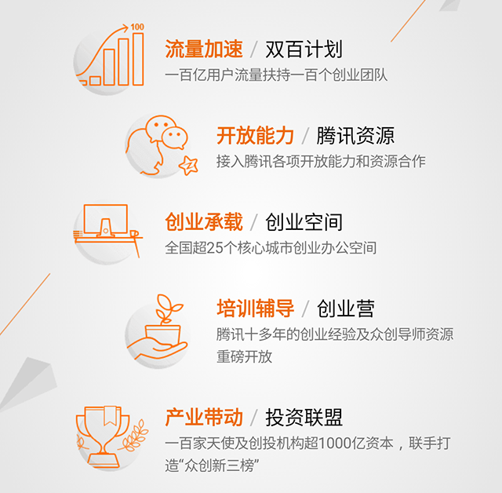
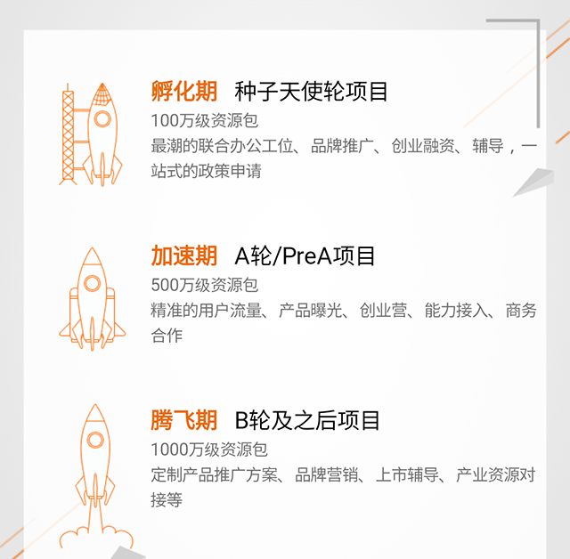
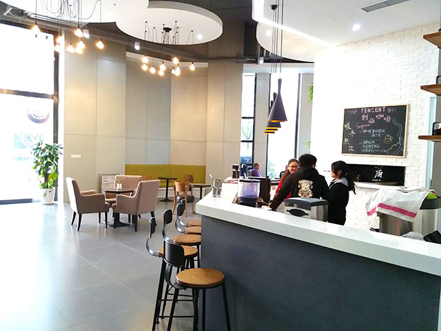

快办商户通入驻腾讯众创空间，现安静地招聘一波小伙伴！
（一）受邀
2014 年 2 月的一天，云邮天下悄然成立，积攒了 10 年腾讯企业级产品运营推广经验的团队迸发创新思潮，着手研发新产品。15 年 10 月，云邮天下推出快办商户通 1.0，陆续在泸州老窖、郎酒、利郎等 2000 家种子用户中投入试用。
用户体验真的是棒棒哒……
用户的反馈给了我们前行的动力! 于是我们有了展望未来的信心。
2015 年 10 月重庆腾讯众创空间对外开放，邀请价值项目团队入驻，快办商户通项目是其中之一。那么，是不是被邀请了就能直接入驻呢？并不是。
按腾讯一贯的调性，本次依然是让受邀的项目团队进行项目角逐，最后选定部分项目正式入驻。来来回回，整个过程下来也有小半年呢。直到今年 2 月快办商户通成功！被！选！中！也是唯一一个被看好的微支付项目。所以今天，我们！搬！家！了！
-
腾讯大楼 -
十几年如一日的胖企鹅 -
互联网产业在这里扎堆 -
那个穿衬衣的帅哥大拇指低一点，保持队形 -
我们的二师兄也在这里
（二）产品
腾讯看好的项目到底是怎样的？接下来说说我们的产品。
快办商户通是一个集成客户关系管理、供应链管理等模块同时结合微信公众号、微信企业号和微信支付的有着完整闭环针对线下 B 端的移动产品。
在互联网+的时代，传统线下实体零售业如火如荼的在思考转型，有的企业建起了自己的电商平台，但是成本高、流量少的问题一直没能解决。

也有的企业选择入驻大型电商平台，但面临数据无法沉淀，不能与用户互动，最后客户都傲娇的走了，最终收效甚微。
现在，快办商户通来了，将微信公众号、微信企业号、微信支付与线下实体零售必需的供应链管理和客户管理相结合，以流量为基础帮助实体零售业建立粉丝群体，搭建智慧零售体系。
当然，除了产品，我们还有一个运营腾讯产品 10 年之久的团队。
（三）腾讯众创空间
腾讯众创空间是腾讯为互联网创业者提供的线上线下一体化全要素创业扶持与服务的众创加速平台，在这里创业者将获得流量加速能力、开放支持能力、创业承载能力、教育培训能力、辐射带动能力等能力的全方位支持。
众创空间，为了每一个创业梦想 
众创空间五大特色 创业者将获得更多的资源 
今天，四年一次的 2 月 29 日，我们搬进了腾讯众创空间，在这里加速创业的步伐。
（四）小伙伴快到碗里来
好吧，我们是要招聘小伙伴的，那么我们急需哪些小伙伴呢？
正题来了：
内容运营专员：混迹于媒体（自媒体也算），能写一手有内涵的文字，脑洞大开，一年相关经验，无需媒体资源积累，欢迎段子人才。
产品线上推广专员：了解常规线上推广方式，熟悉 SEO，一年线上推广经验（累计也算），用温柔的手法将产品霸屏于各类线上渠道。
技术开发：整理技术文档和编写代码胜过整理自身形象，熟悉面向对象技术和某一种主流数据库如 Oracle/SQLServer/Mysql 等，熟悉 html、css、javascript、ajax 等，会使用一种 Javascript 类库，如 jQuery, Bootstrap 等，欢迎有故事的程序猿朋友。
销售工程师：善于管理情绪，对客户有如初恋，为用户代言，熟悉互联网，从事过企业邮箱、域名、网站建设等产品销售工作的尤佳，欢迎应届毕业生。
如果你对我们的团队和产品感兴趣，请加入我们，除了满意的待遇和欢愉的氛围以外，还将共享到腾讯提供的诸多资源，更近距离的与互联网接触，同时你的价值也将得到充分的体现。
联系方式:
吃饭区 休闲区 休闲区